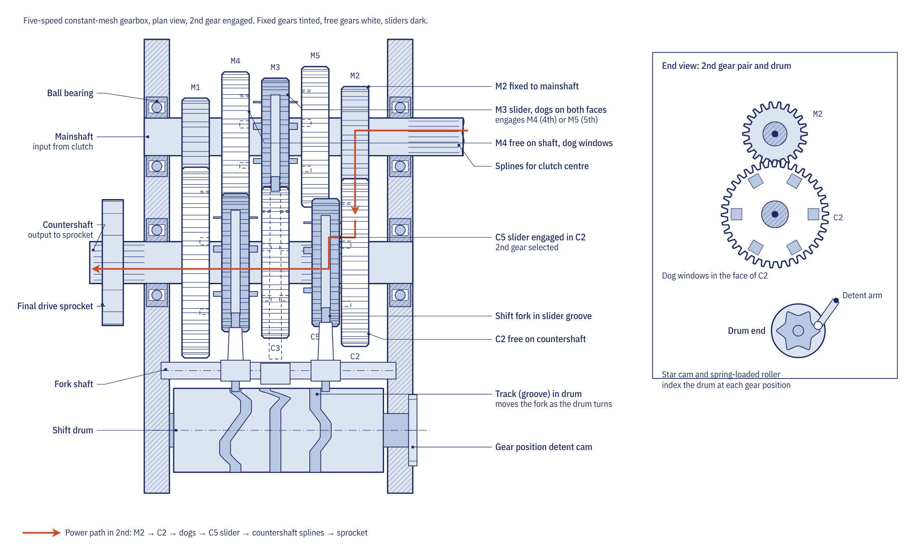
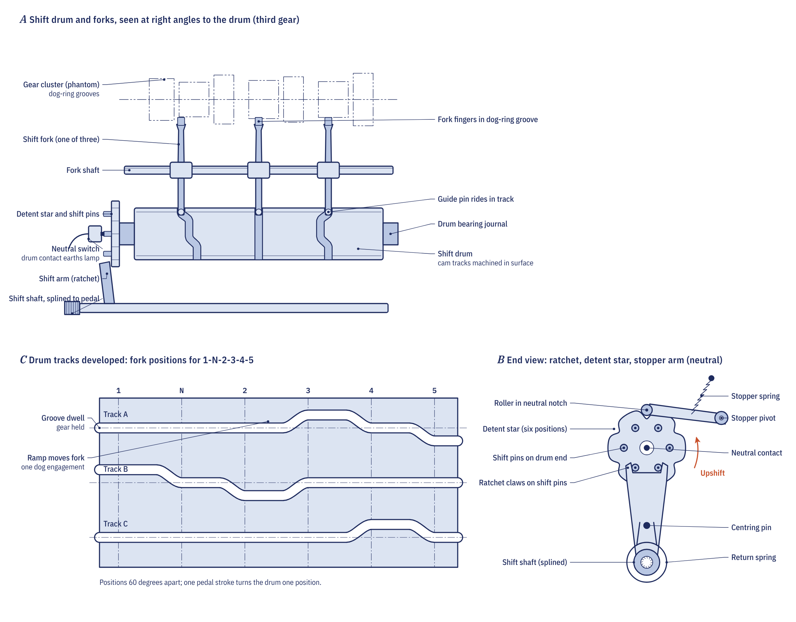

Why a motorcycle needs a gearbox
An engine only produces useful torque over a limited band of speed. The K-Light 125 commuter, the worked example used throughout the Motopedia course, makes its peak torque of 8.9 N·m at 7,500 rpm and its peak power of 7.8 kW at 9,000 rpm, and it runs out of breath not far beyond. The gearbox chooses a ratio that keeps the engine inside that band from walking pace to top speed, and it multiplies torque at low road speed so the machine can pull away on a hill with a passenger.
Five or six ratios are normal on road motorcycles. Motocross bikes use five closely spaced ratios, trials bikes have six with a very low first gear, and twist-and-go scooters use a continuously variable transmission instead.
Constant mesh: every gear is always turning
Almost every motorcycle gearbox is a constant-mesh, two-shaft, sequential type built into the crankcase and lubricated by the engine oil. The mainshaft (input shaft) carries the clutch and receives power from it. The countershaft (output shaft) lies parallel to it and carries the gearbox sprocket on its outer end. Each gear on one shaft is permanently meshed with a partner on the other; what changes from gear to gear is which pair is locked to its shaft.
On each shaft there are three kinds of gear:
- Fixed gears are machined as part of the shaft or pressed on, and always turn with it.
- Free gears spin on a bush or needle bearing and do nothing until something locks them to the shaft.
- Sliding gears are splined to the shaft, so they always turn with it, but can move along it. Their faces carry dogs, short projecting lugs that drop into slots in the face of the neighbouring free gear.
When a sliding gear moves across and its dogs engage a free gear, that free gear is locked to the shaft and its pair carries the drive. All the other pairs simply idle.
There is no synchromesh: the dogs engage abruptly, so the rider unloads them for a moment with the clutch or a short throttle lift to let them slide in or out cleanly.
Dogs, and why gears jump out
The dogs carry the full torque of the gear across a few square millimetres of contact. Road gearboxes commonly use three to six dogs per face, with their driving faces back-cut by 2 to 4 degrees so that the drive torque pulls the two gears together. As the edges wear and round off, the back-cut is lost and the force reverses: under load, the gears are pushed apart. Rounded dogs are the root cause of almost every case of a gearbox jumping out of gear, and the K-Light 125 manual lists dog edges worn to round corners as the first cause.
Dogs are always replaced in pairs, the sliding gear together with its free partner, because a new gear running against a rounded one soon wears to the same shape.
The shift drum and forks

The shift drum is a cylinder with grooves machined around it. Each shift fork has a guide pin that runs in one groove and two prongs that sit in a groove on a sliding gear. As the drum turns, each groove moves its fork, and so its sliding gear, sideways by a set amount at the right moment. The angle of the drum defines the gear.
The gear pedal is splined to a gearshift shaft that runs through the crankcase. Inside, a shift arm with spring-loaded pawls catches pins on the end of the drum, so each stroke of the pedal turns the drum by one step, and a return spring brings the pedal back to centre for the next stroke. This is what makes the box sequential: each press can only move one gear up or down.
Between shifts the drum is held by a stopper arm, a spring-loaded roller that sits in the notches of a star-shaped plate on the drum. The notch profile pulls the drum fully into position at the end of each shift, so a half-finished pedal movement either completes or falls back.
Why neutral sits between first and second
On a typical pattern of one down and the rest up, neutral is a half-step between first and second. That is why the pedal moves only half as far from first to neutral, and why a hurried shift from first to second can stop in neutral. A neutral switch in the crankcase is earthed by a contact on the drum in neutral; it lights the green lamp and, on bikes with starter interlocks, lets the starter turn with the clutch engaged.
Quickshifters
A quickshifter allows full-throttle upshifts without the clutch. A sensor in the gear linkage detects pressure on the pedal, and the engine management cuts ignition or injection for a very short time, typically about 80 to 100 ms at low engine speed and about 50 ms near the limiter. That brief loss of drive unloads the dogs so the drum can complete the shift.
Gear ratios and road speed
Each gear ratio is the tooth count of the driven gear divided by that of the driving gear. Power passes through three stages in series, the primary drive from crank to clutch, the gearbox and the chain final drive, so the ratios multiply to give the overall ratio. Engine speed divided by the overall ratio gives wheel speed, and wheel speed multiplied by the rolling circumference of the rear tyre gives road speed.
Chapter 5.2 of the course works the method with ratios typical of an air-cooled 125 cc single, since the K-Light manual gives only its 41-tooth rear sprocket: a primary ratio of 3.400, a final drive of 41/14 (2.929), a first gear of 2.750 and a fifth of 0.900. With those figures fifth gear has an overall ratio of 8.96, and at 9,000 rpm the bike would do about 113 km/h. The manual quotes a top speed of 90 km/h, so in practice the engine never reaches its power peak in fifth. That is deliberate on a commuter: a tall top gear lowers cruising revs, noise and fuel use.
The equations summary collects the gear, overall ratio and road-speed formulas.
Common gearbox faults
| Symptom | Likely cause | First check |
|---|---|---|
| Jumps out of one gear under load | Rounded dogs on that pair, worn or bent fork, worn drum groove | Dog edges; fork prong thickness (K-Light limit 4.7 mm); drum groove width (limit 7.3 mm) |
| Hard shifting, stiff pedal | Clutch not fully releasing, bent gearshift shaft, seized fork | Clutch free play and release first |
| Pedal does not return | Broken or unhooked return spring | Remove the clutch cover and watch the spring |
| False neutrals between gears | Short pedal travel, worn detent plate or stopper roller | Linkage free play, pedal height, detent notches |
| Whine in one gear only | Pitted or chipped teeth on that pair | Inspect the teeth when the cases are split |
Many shifting complaints are really clutch complaints. Before splitting the crankcase, confirm that the clutch releases fully, that the oil is the right grade and level, and that the external linkage moves freely. The K-Light 125 manual lists a clutch that does not fully disengage as the first cause of difficult shifting.
Our guide to how a motorcycle clutch works covers drag and free play, the most common reasons for a box that is hard to shift.
Go deeper
- Chapter 5.2: Gearbox: the full selector mechanism, worked ratio table and fault chart
- Equations summary: gear ratio, overall ratio, road speed and gear step
- The gearbox in the 3D Overview: where it sits behind the clutch
- Drivetrain and chassis quiz: test yourself on Module 5
- Jumps out of gear: causes and checks
- False neutrals
- Gearshift mechanism check
- Shift drum inspection: measuring forks and grooves
- Gearbox parts: every gearbox fault and repair in one list
Frequently asked questions
Why is neutral between first and second on a motorcycle?
The shift drum has a half-step between first and second, and the neutral position sits there. It keeps first gear at the end of the pattern where a downward press always finds it, and it is why a hurried shift from first to second can stop in neutral.
Why can I not skip gears on a motorcycle?
Each press of the pedal turns the shift drum by one step through a ratchet, so the box is sequential. To go from fifth to second you press the pedal three times, passing through fourth and third.
What causes a motorcycle to jump out of gear?
Almost always worn dogs: once their back-cut edges round off, the drive torque pushes the gears apart instead of pulling them together. A worn or bent fork, a worn drum groove or a weak stopper spring can add to it. The worn gears are replaced in pairs.
Do I need the clutch to change up a gear?
The dogs must be unloaded for a moment to slide out and in. A clutch pull does this, and so does a quick throttle lift. A quickshifter does the same job electronically by cutting ignition or injection for a few tens of milliseconds.
Written by Transitions Lab for the Motopedia open motorcycle course. Text and illustrations are licensed CC BY-SA 4.0. Figures and values come from the course modules; see sources and credits.